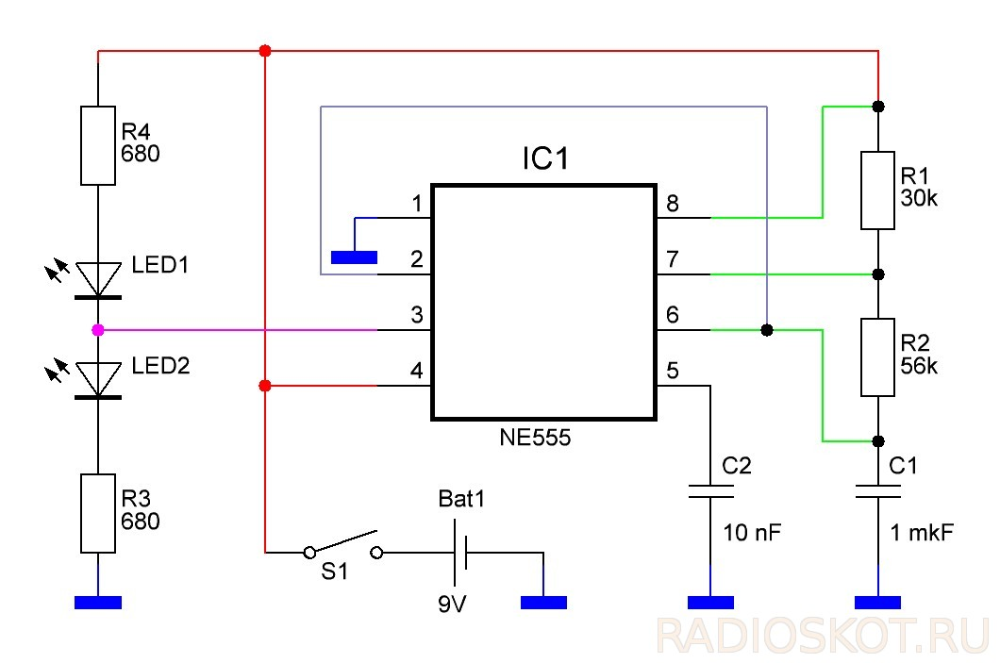
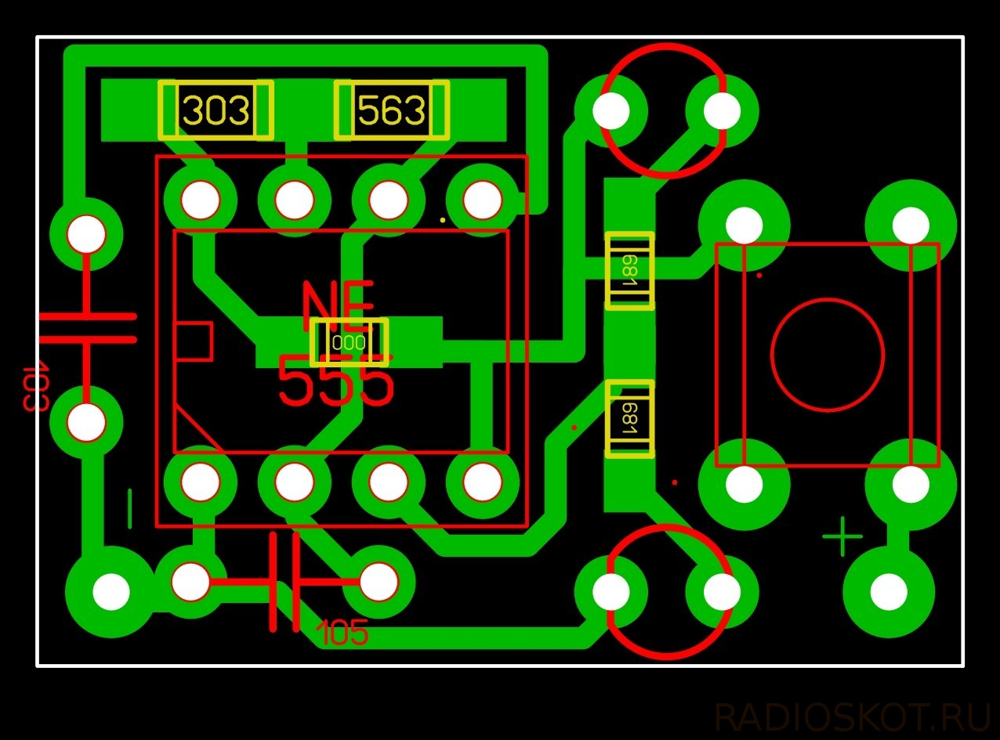
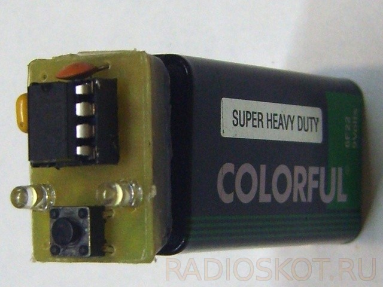
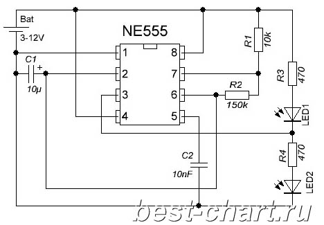
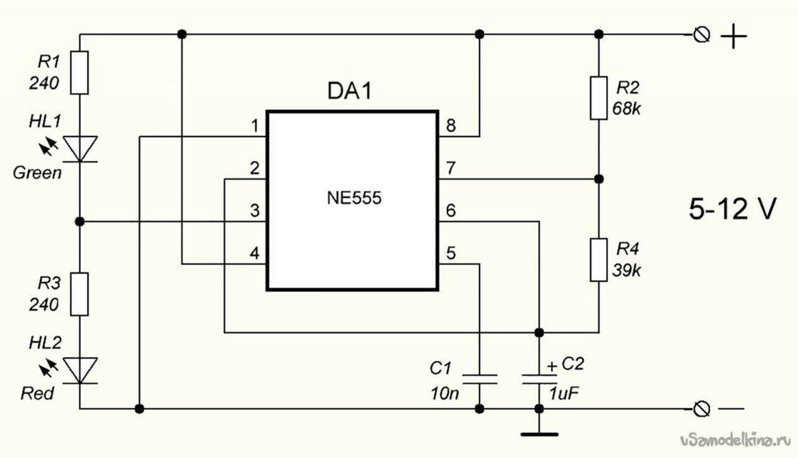
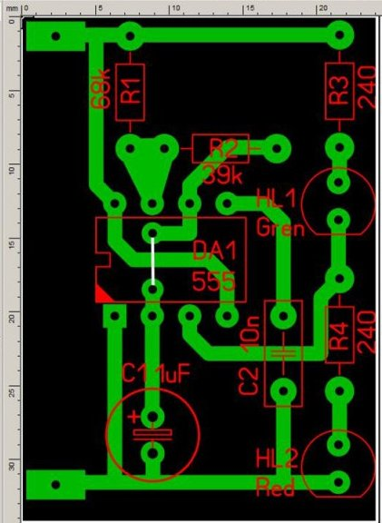

Схемы для проверки микросхем NE555
Схема 1

Рис. 1 - Схема №1 для проверки микросхем NE555
СПИСОК ИСПОЛЬЗУЕМЫХ ДЕТАЛЕЙ
- Резисторы:
- 680 Ом – 2 шт.
- 30 кОм – 1 шт.
- 56 кОм – 1 шт.
- 0 Ом (перемычка) – 1шт.
- Конденсаторы:
- 1 мкФ – 1шт.
- 10 нФ – 1шт.
- Светодиоды 3 мм – 2шт.
- Панелька 8-pin под микросхему – 1шт.
- Тактовая кнопка – 1шт.
- Штепсельный разъём от старой батарейки «крона» – 1шт.

Рис. 2 - Печатная плата схемы №1 для проверки микросхем NE555

Рис. 3 - Устройство схемы №1 для проверки микросхем NE555
radioskot.ru - ПРОВЕРКА МИКРОСХЕМ ТАЙМЕРОВ
Схема №2

Рис. 4 - Схема №2 для проверки микросхем NE555
alldiy.top - Тестер NE555
Схема №3

Рис. 5 - Схема №3 для проверки микросхем NE555

Рис. 6 - Печатная плата схемы №3 для проверки микросхем NE555

Источники
radioskot.ru - ПРОВЕРКА МИКРОСХЕМ ТАЙМЕРОВ
alldiy.top - Тестер NE555
usamodelkina.ru - Простой тестер микросхем NE555